SwasBridge

SwasBridge is a health insurance platform designed to help users not just file claims but actively engage with their wellness benefits. While most insurance platforms focus on post-crisis interactions, SwasBridge reimagines the experience to prioritize proactive care, making wellness accessible, clear, and consistent.
My Role — What was the contribution to the project?
At SwasBridge, I led the design for the health and wellness section, enabling users to navigate and use preventive care features. I conducted primary research with both insurance users and aggregators like Ditto, translating insights into clear user flows.
At SwasBridge, I focused on:
- Identifying key user pain points through primary research
- Benchmarking existing platforms to define opportunities
- Designing intuitive wireframes to reduce information overload
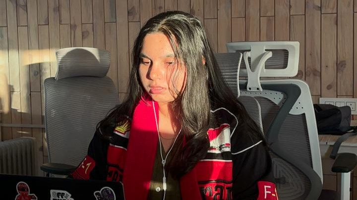
Above: That's me, working on SwasBridge
Problem Statement — What were the issues faced by stakeholders?
SwasBridge aimed to enter the health insurance space with a fresh perspective: one that goes beyond traditional claims and paperwork. They wanted to design an experience that not only simplified health coverage, but also empowered users to actively engage with their wellness benefits.
While most insurance platforms focus on crisis management, SwasBridge saw an opportunity to stand out by creating a product that made preventive care and wellness feel accessible, valuable, and easy to use.
Outcome — How did the designs help the users?
Enhancing Preventive Health Engagement
Improved user engagement with wellness features by simplifying access and navigation, leading to better awareness around preventive care and early diagnosis.
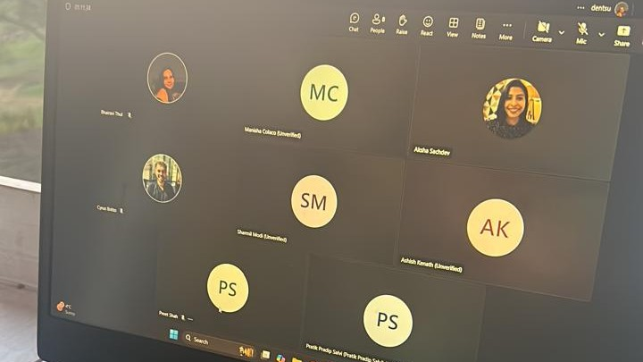
Above: Discussion with the client and teammates
Design Process — How were the challenges addressed?
To address the requirements, I followed the double diamond method.
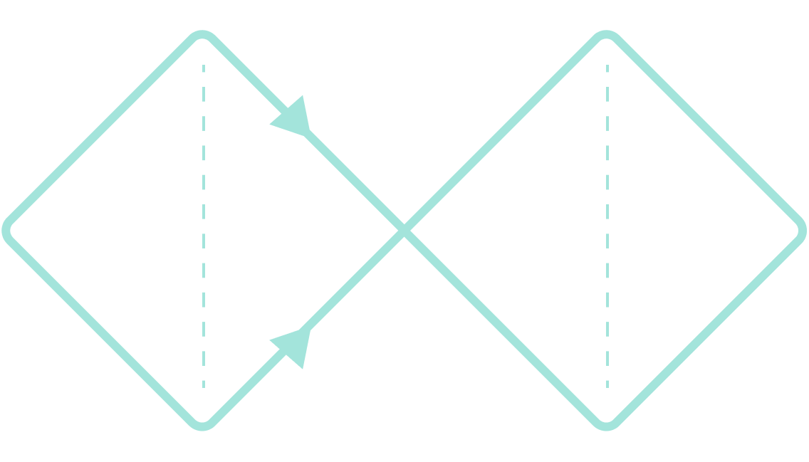
Design System — How was consistency maintained throughout?
Below is a glimpse of the design system created on Figma to maintain consistency:
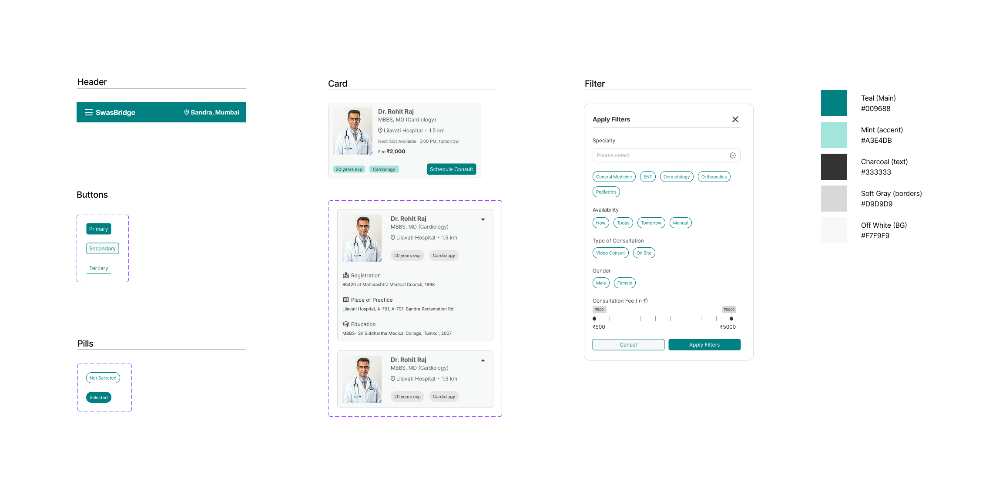
User Flows — How was the user's actions demonstrated?
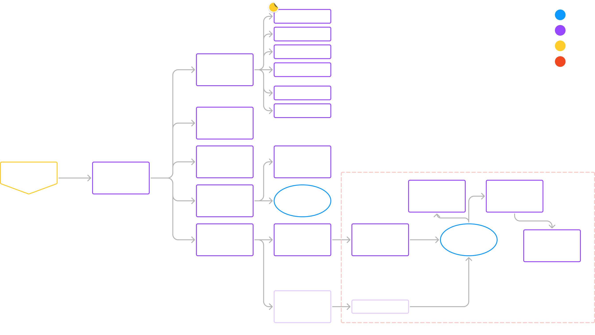
Wireframes — How was all the data converted to designs?
After a lot of benchmarking, analyzing data and pain points, and creating the user flows, I designed the wireframes. Here, I've shown how the BMR calculator functions in happy and sad scenarios.
Flow Start ⬇️
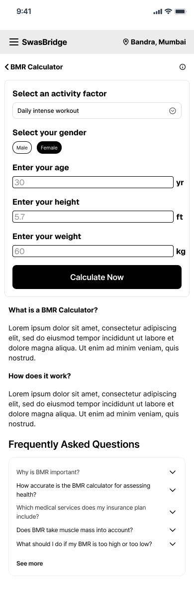
STP ⬇️
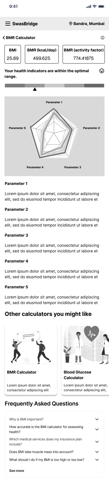
NSTP ➡️
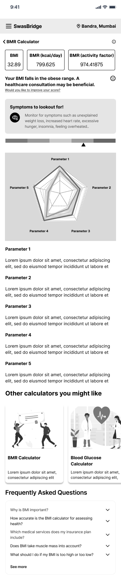
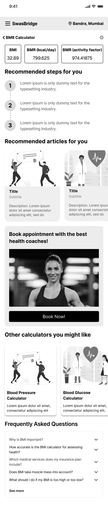
UI Design — How did the wireframes turn out?
To keep the focus on UI and functionality, I'm showing the booking-appointment flow. A colour pop was a necessity after working on the black and white wireframes!
Apply filters to find a suitable doctor
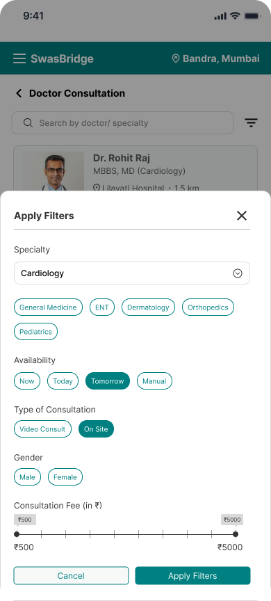
View detailed doctor info + book a consultation slot
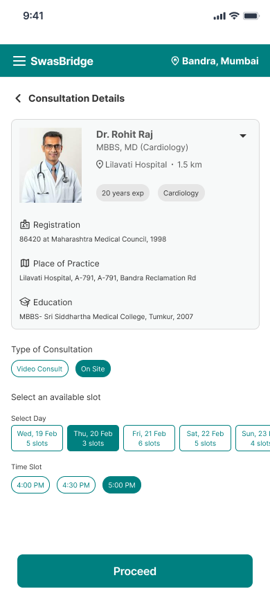
Confirmed successful payment
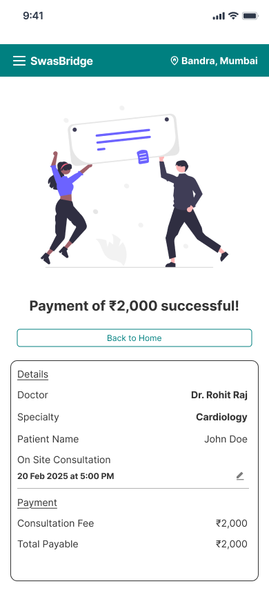
Prototype — How were the screens brought to life?
Outcome — How was the collaboration with the POs and Health & Wellness team?
- Continuous Communication: Always in the loop with both teams, understanding their restrictions and possibilities.
- Challenges & Solutions: Early-stage friction around creating a smooth experience was resolved after a few workshops, getting all teams on the same page.
Lessons - What I'd Carry Into the Next Project?
- Cadence over convenience: Client conversations happened around milestones rather than on a fixed schedule. A standing check-in, even a short one, would have caught ambiguity in requirements sooner and kept the design process moving without waiting on clarification.
Stakeholder Research — How was the approach with stakeholders?
Objective
To design a user-centered health insurance experience that simplifies plan navigation, highlights wellness benefits, and encourages proactive engagement — making insurance feel less intimidating and more human.
Stakeholders Involved
- Product Owners: Provided insights into business goals, the need to streamline health insurance processes, and key performance indicators.
- Health & Wellness Team: Discussed technical requirements for integration with the given requirements and making the experience user-centric.
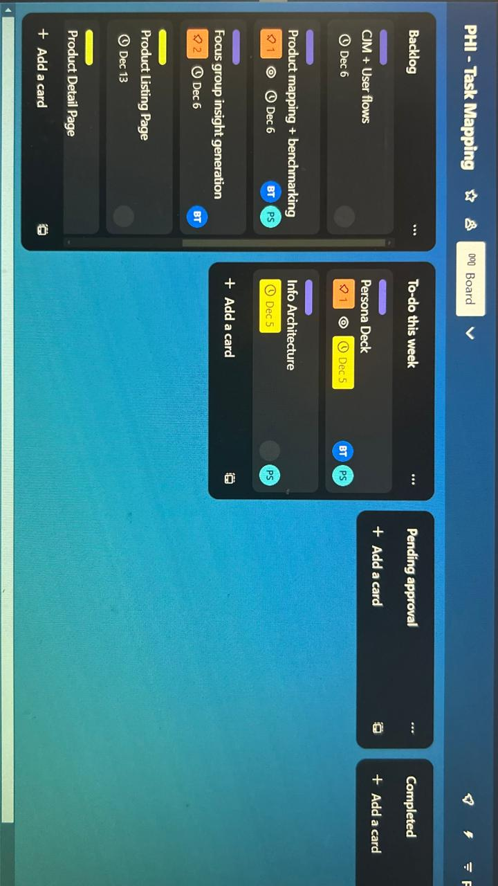
Above: We maintained SwasBridge on Asana
User Research — What were the pain points faced by the users?
From Insurance to Assurance
Health insurance isn't just about claims, it's about care. Users want to feel supported even before something goes wrong. But current platforms often confuse, overwhelm, or under-deliver on wellness benefits.
There's a strong opportunity to shift from transactional experiences to thoughtful, wellness-first journeys — designed to inform, support, and build lasting trust.
Secondary Research — How were the competitors benchmarked?
As part of secondary research, I benchmarked key insurance and wellness platforms including HDFC Ergo, ICICI Lombard, Niva Bhupa, and Aditya Birla. I compared features like claims, hospitality and health, non-medical, waiting period, and others to identify gaps and opportunities.
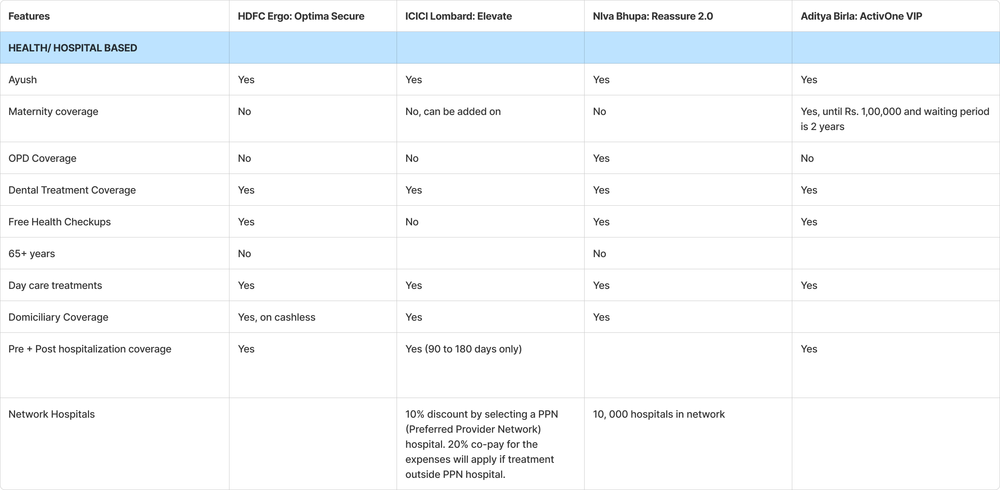
Above: Glimpse of the competitor features comparison